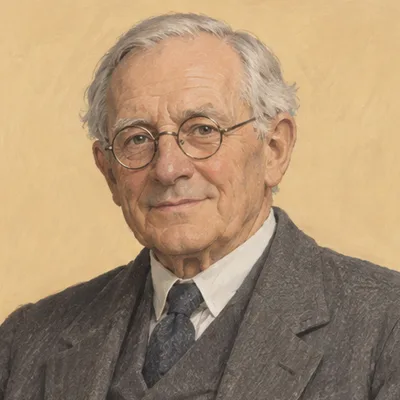
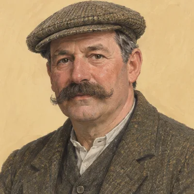
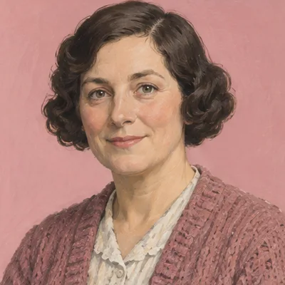
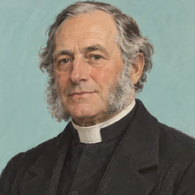
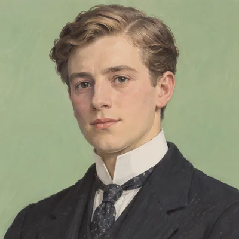
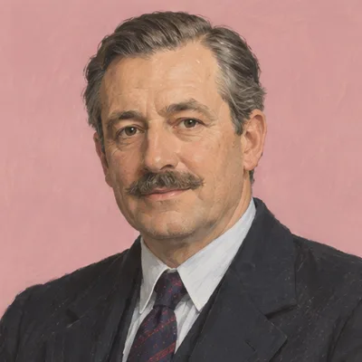

Contacts 79
Everyone in the farm’s story, 1877 to 1994: the title chain, the courts, the councils, the press of the day and the family.
Title chain and owners · 16
Courts and the land register · 14
Councils and public bodies · 11
Press, broadcasters and records · 13
Family · 3
Places · 7
Everyone else · 15

Charles St David SpencerPerson · d. 1936
John Williams (the younger)Person · farmer, Great House, from 1908
Esther WilliamsPerson · Llandough, 1923Frederick (Fred) BucklerPerson · 1908/9–1965/67
Rev. H. H. RickardsPerson · glebe owner, 1872
Lord Colum Crichton-StuartPerson · Bute heir, 1900Stephenson & AlexanderBody · auctioneers, 1902
The freeholders’ agentPerson · freeholders’ agentDebenham TewsonBody · agents for BP PropertiesWAEC (War Agricultural Executive Committee)Body · wartime farm committee